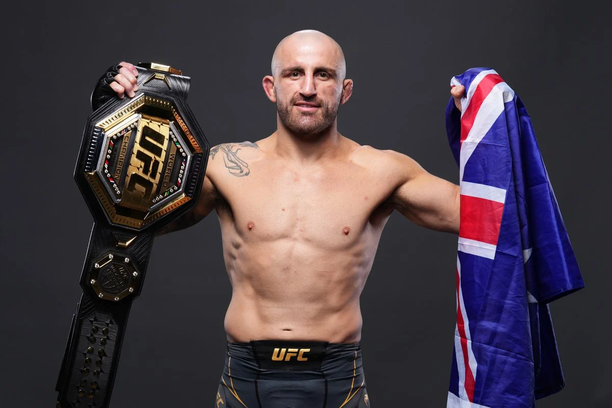

İrlandalı bir MMA dövüşçüsüdür. UFC’de tüy ve hafif siklet şampiyonluğu yaşamış ilk dövüşçüdür. Karizmatik kişiliği, sert yumrukları ve trash-talk’larıyla tanınır. Aynı zamanda UFC'nin en sevilen dövüşçülerinden birisidir.
Alex "Poatan" Pereira
MMA Karnesi: 12-3
Brezilyalı bir MMA ve eski kickboks dövüşçüsüdür. UFC’de orta ve hafif ağır siklet şampiyonluğu yaşamıştır. Güçlü yumrukları ve özellikle sol kroşesiyle tanınır. Kickbokstan MMA'ye geçiş yaparak hızla büyük başarılar elde etmiştir. Hâlâ UFC'de aktif olarak dövüşmektedir.
"The Eagle" Khabib Nurmagomedov
MMA Karnesi: 29-0
Dağıstanlı Rus bir MMA dövüşçüsüdür. UFC eski hafif siklet şampiyonudur ve kariyerinde hiç yenilgi almamıştır. Yere alma ve kontrol teknikleriyle ünlüdür. Khabib, dövüş kariyerini 2020 yılında sonlandırmıştır ve birçok dövüşçünün antrenörlüğünü yapmaktadır.
"GSP" Georges St-Pierre
MMA Karnesi: 26-2
Kanadalı bir MMA dövüşçüsüdür. UFC'nin eski welterweight ve orta siklet şampiyonudur. Teknik dövüşü, güreş ve boks kombinasyonlarıyla tanınır. GSP, MMA tarihinin en iyi dövüşçülerinden biri olarak kabul edilir.
Charles “Do Bronx” Oliveira
MMA Karnesi: 35-10
Brezilyalı bir MMA dövüşçüsüdür. UFC’nin eski hafif siklet şampiyonudur ve en çok submission (boğma, kilit) galibiyeti alan dövüşçüsüdür. Agresif dövüş stili ve yere alma teknikleriyle tanınır. Hâlâ UFC'de aktif olarak dövüşmektedir.
Israel “The Last Style Bender” Adesanya
MMA Karnesi: 24-5
Nijerya doğumlu Yeni Zelandalı bir MMA dövüşçüsüdür. UFC eski orta siklet şampiyonudur ve dövüş stili, stratejik ve teknik kickboks yetenekleriyle öne çıkar. Adesanya, UFC'de önemli bir isim haline gelmiş ve birçok dövüşünü muazzam teknik yetenekleriyle kazanmıştır. Hâlâ UFC'de aktif olarak dövüşmektedir.
Kamaru “The Nigerian Nightmare” Usman
MMA Karnesi: 20-4
Nijeryalı-Amerikalı bir MMA dövüşçüsüdür. UFC welterweight şampiyonudur ve güçlü güreş yetenekleriyle tanınır. Usman, dominant bir şampiyonluk dönemi geçirmiştir ve çok yönlü dövüş stili ile dikkat çeker.
Demetrious "Mighty Mouse" Johnson
MMA Karnesi: 27-3-1
Amerikalı bir MMA dövüşçüsüdür. UFC’de, süper flintersiklet şampiyonu olarak 11 defa başarılı savunma yaparak rekor kırmıştır. Hızlı, teknik ve stratejik dövüş stiliyle tanınır. Johnson, MMA dünyasında en iyi dövüşçülerden biri olarak kabul edilmektedir. Şu an ONE Championship’te dövüşmektedir.
Anderson "The Spider" Silva
MMA Karnesi: 34-11
Brezilyalı bir MMA dövüşçüsüdür. UFC orta siklet şampiyonluğunda uzun süre hüküm sürmüş ve 16 maçlık galibiyet serisiyle büyük bir rekor kırmıştır. Silva, dövüşteki esnekliği, hızlı refleksleri ve teknik yetenekleriyle tanınır. MMA tarihinin en büyük dövüşçülerinden biri olarak kabul edilir.
"Blessed" Max Holloway
MMA Karnesi: 26-8
Amerikalı bir MMA dövüşçüsüdür ve eski UFC tüy siklet şampiyonudur. Hızlı, dayanıklı ve agresif dövüş tarzıyla tanınır. Holloway, uzun süreli şampiyonluk dönemi ve etkileyici dövüş stiliyle UFC tarihinin en iyi tüy siklet dövüşçülerinden biri olarak kabul edilir. Hâlâ UFC'de aktif olarak dövüşmektedir.
Dustin "The Diamond" Poirier
MMA Karnesi: 30-9
Amerikalı bir MMA dövüşçüsüdür. Eski Geçici UFC Hafif Siklet Şampiyonudur. UFC hafif sikletin en önde gelen isimlerinden biridir. Güçlü boks yetenekleri ve etkili dövüş stratejileriyle tanınır. Poirier, Conor McGregor'a karşı elde ettiği zaferlerle dikkat çekmiş ve UFC’de büyük başarılar elde etmiştir. Hâlâ UFC'de aktif olarak dövüşmektedir.
"DC" Daniel Cormier
MMA Karnesi: 22-3
Amerikalı bir MMA dövüşçüsüdür ve eski UFC hafif ağır siklet ve ağır siklet şampiyonudur. Güreş kökenli olan Cormier, güçlü grappling ve dövüş stratejileriyle tanınır. UFC’deki kariyerinde büyük başarılar elde etmiş ve tarih boyunca en iyi dövüşçülerden biri olarak kabul edilmiştir. Cormier, aynı zamanda bir UFC yorumcusu ve analistidir.
Stipe Miocic
MMA Karnesi: 20-5
Hırvat asıllı Amerikalı bir MMA dövüşçüsüdür ve eski UFC ağır siklet şampiyonudur. Güçlü boks yetenekleri, dayanıklılığı ve dövüş stratejileriyle tanınır. Miocic, UFC tarihinin en başarılı ağır siklet şampiyonlarından biri olarak kabul edilir ve birden fazla kez unvanını savunmuştur.
Amanda "Lioness" Nunes
MMA Karnesi: 23-5
Brezilyalı bir MMA dövüşçüsüdür ve eski UFC kadın bantamweight ve featherweight şampiyonudur. Dövüş kariyerinde hem stand-up hem de yere alma yetenekleriyle dikkat çeker. Nunes, UFC’deki dominant performansıyla tanınır ve tarih boyunca en güçlü kadın dövüşçülerinden biri olarak kabul edilir.
Tom Aspinall
MMA Karnesi: 15-3
İngiliz bir MMA dövüşçüsüdür ve UFC ağır siklet kategorisinde mücadele etmektedir. Genç yaşta büyük bir çıkış yapmış olan Aspinall, hızlı hareketliliği ve teknik dövüş yetenekleriyle dikkat çeker. Özellikle güçlü boks yetenekleri ve etkili yere alma teknikleriyle tanınır. UFC'deki hızlı yükselişi, onun geleceğin yıldızlarından biri olacağına işaret etmektedir. UFC'de aktif olarak dövüşmektedir.
Jose Aldo
MMA Karnesi: 32-9
José Aldo, Brezilyalı efsane bir MMA dövüşçüsüdür. UFC'de bantamweight ve featherweight kategorilerinde büyük başarılar elde etmiştir. Özellikle güçlü tekmeleri, hız ve teknik yetenekleriyle tanınır. Aldo, UFC featherweight şampiyonluğunu uzun süre savunmuş ve dövüş kariyerinde birçok önemli zafer kazanmıştır. MMA tarihinin en dominant dövüşçülerinden biri olarak kabul edilir.
Alexander “The Great“ Volkanovski

MMA Karnesi: 27-4
Avustralyalı bir MMA dövüşçüsüdür ve UFC featherweight eski şampiyonudur. Dövüş kariyerinde güçlü boks yetenekleri, dayanıklılığı ve stratejik zekasıyla tanınır. Volkanovski, UFC featherweight şampiyonluğunu uzun süre savunmuş ve dövüşlerdeki yüksek tempoyu ve agresifliğiyle dikkat çekmiştir. Hâlâ UFC'de aktif olarak dövüşmektedir.
"El Cucuy" Tony Ferguson
MMA Karnesi: 26-11
Amerikalı MMA dövüşçüsüdür. UFC hafif sikletinde tanınan bir isim olan Ferguson, dövüşlerinde agresif stili ve yaratıcı teknikleriyle dikkat çeker. Bir zamanlar şampiyonluk için büyük umutlar taşıyan Ferguson, son yıllarda sakatlıklar ve zorluklarla mücadele etmiştir. Şu anda Global Fight League (GFL) organizasyonunda dövüşmektedir.
Nate Diaz
MMA Karnesi: 22-13
Amerikalı MMA dövüşçüsüdür. UFC’de hafif siklet ve velter siklette mücadele eden Diaz, dayanıklılığı ve dövüşlerdeki agresif tarzıyla tanınır. Conor McGregor’a karşı aldığı galibiyetle büyük ses getirmiştir. Şu anda serbest dövüşçü olarak kariyerine devam etmektedir.
Brandon "The Assassin Baby" Moreno
MMA Karnesi: 22-8-2
Meksikalı bir MMA dövüşçüsüdür. UFC sinek sikletin eski şampiyonudur. Moreno, güçlü grappling yetenekleri ve teknik vuruşlarıyla tanınır. Meksika'nın ilk UFC şampiyonu olarak büyük bir başarıya imza atmıştır ve dövüşçü olarak stratejik zekasıyla öne çıkar.
Gökhan "The Rebel" Saki
MMA Karnesi: 1-2 Genel Dövüş Karnesi: 102-14
Türk kickboks ve MMA sporcusudur. Kickboks kariyerinde büyük başarılar elde etmiş ve K-1 organizasyonlarında dikkat çekmiştir. K1 ve Glory organizasyonlarında çok başarılı olan Saki istediği performansı MMA'de verememiştir. Saki, dövüş stilindeki agresiflik ve teknik becerisiyle bilinir. Hem kickboks hem de MMA ringlerinde izlediği etkili stratejiler ve savaşçı ruhu ile tanınan Saki, dövüşçü kimliğiyle Türk sporunun en önemli figürlerinden biridir.
NOT: Liste sıralamasız şekildedir ve listeye aktif olarak şampiyon olan kişiler ekleenmedi. O kişileri aktif şampiyonlar sekmesinde görebilirsiniz. Ayrıca öneriler geldikçe iz bırakan dövüşçü eklenecektir.